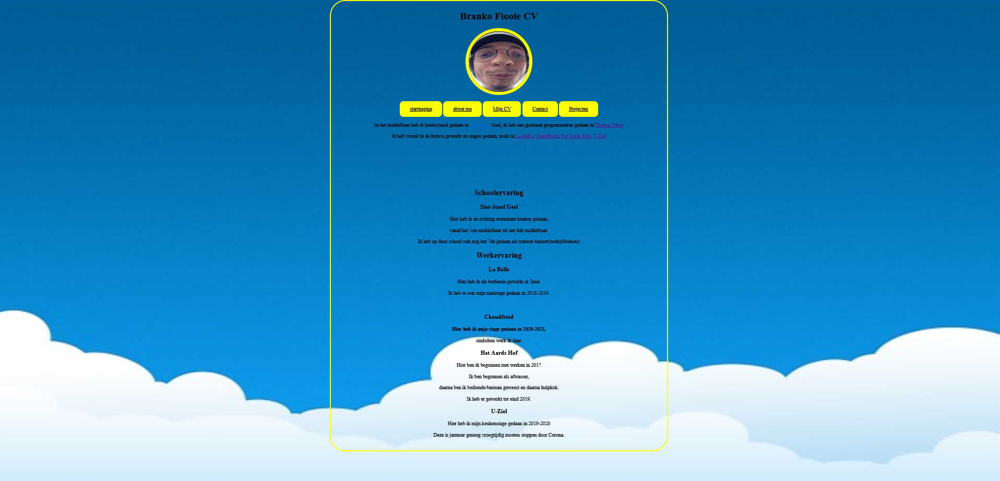
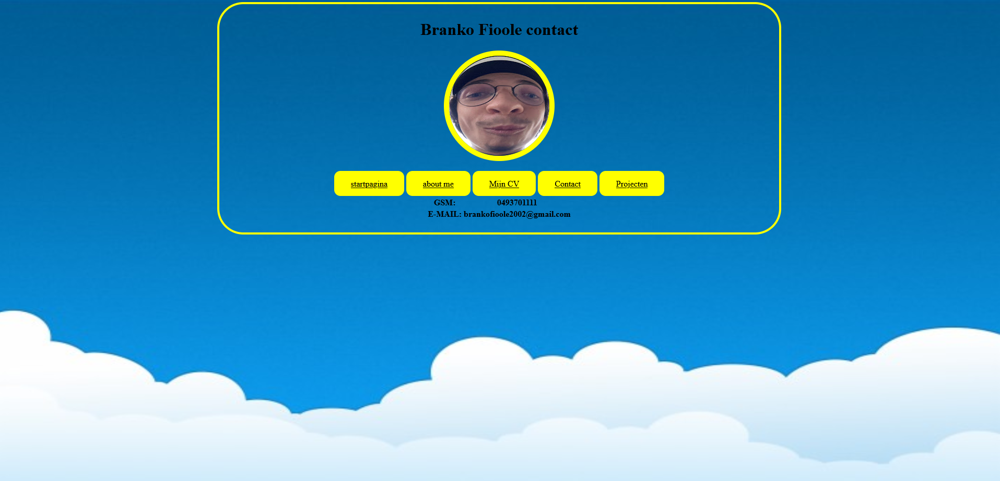
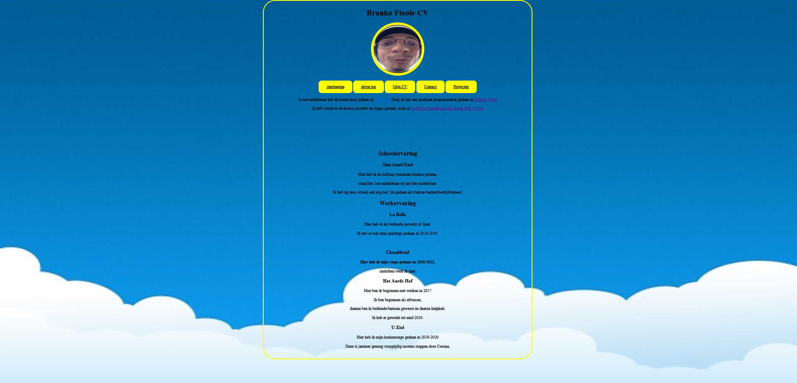
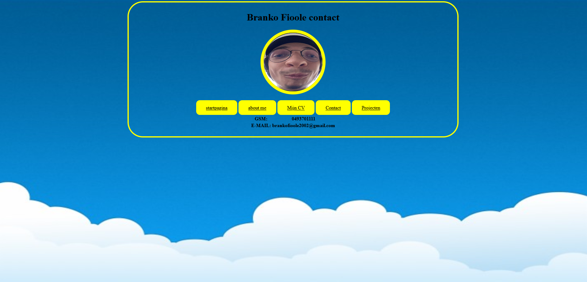

Eerste prototype van mijn portofolio
 



Ons portofolio maakte we in het vak userinterfaces. dit is mijn eerste portofolio proto type. Hier in heb ik vooral getest wat alles deed. Zoals alle tags en alle css, we leerde dit in het 1ste kwartaal van het jaar dus dit is nog zeer simpele html en css. We hebben ook een moodboard en kleuren pallet moeten maken. Ook leerde we met adobe een website teschetsen.